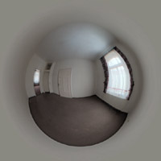
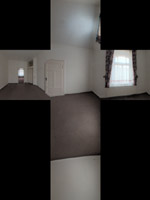
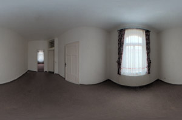

|
HDRI (High Dynamic Range Image) is the magic word when it comes to creating ultra realistic images. While normal textures save their color values between (0.0, 0.0, 0.0) for black and (1.0, 1.0, 1.0) for white, an HDRI can have much brighter values than (1.0, 1.0, 1.0). These values can go up to 100.000. For example, the sun is much brighter than a white sheet of paper. Because an HDRI map catches this higher-range lighting information from the environment it can be used to illuminate the scene. The HDRI background works like a spherical area light source.
Advantages of the HDRI light:
- Illumination of the scene: The ambient occlusion or global illumination algorithms will sample the HDRI background to estimate how much light arrives from the environment. Even without a real light source a scene can be illuminated using an HDRI background alone.
- Realistic reflections/refractions: The HDRI background can be used to create very realistic reflections or refractions. Lets assume your material has a reflection intensity of 0.1. If you used a normal environment texture (like a .jpg) you will get a value of (1.0, 1.0, 1.0) when the sun is sampled. Multiplied by 0.1 the reflected sun ends up with a dark grey (0.1, 0.1, 0.1) in the reflection. But now lets use an HDRI as background. The sun might be sampled as (100000.0, 100000.0, 100000.0) for example. Multiplied by 0.1 you get (10000.0, 10000.0, 10000.0). After clamping this ends up as a nice realistic white reflection.
- Soft shadows: Because the HDRI can be considered as a big spherical area light the shadows created by it are usually soft.
- Background: You get the background of your scene for free!
This scene was rendered with an HDRI light source.
Check out the realistic reflections and the soft shadows under the pig.
Properties
- HDR image: The filename of the HDR image. You can load HDRIs which come in the .hdr or the .exr file format.
- Type: Defines the mapping of the HDRI file. If your HDRI file was saved in the probe format for example you have to select probe to get the right mapping. There are three widely used mappings available in Cheetah3D.
|

|

|

|
|
Probe
|
Cross
|
Panorama
|
- Intensity: A scale factor for the HDRI texture. Every color sampled from the HDRI will be multiplied by this factor.
- Clamp: Pixels in the HDRI with a very high intensity (for example in the sun) can cause serious noise in combination with ambient occlusion or radiosity renderings. The artifacts can be easily reduced by clamping the high intensities. Don't set the clamp value to low however, or you will lose all the benefits of using an HDRI.
- Samples: Number of samples at which the HDRI light will be evaluated. The more samples you use the smoother the shadows will become. The rendering time will increase substantially with more samples.
- MIS: Turns on MIS (Multiple Importance Sampling). MIS considerably improves the convergence speed of the renderer. So less samples are need to get the same quality. MIS only works with the Falcon renderer.
- Background: The HDRI will also be used for the scene background. Take care when using this since it will interacts with the fog object, if you use one.
|